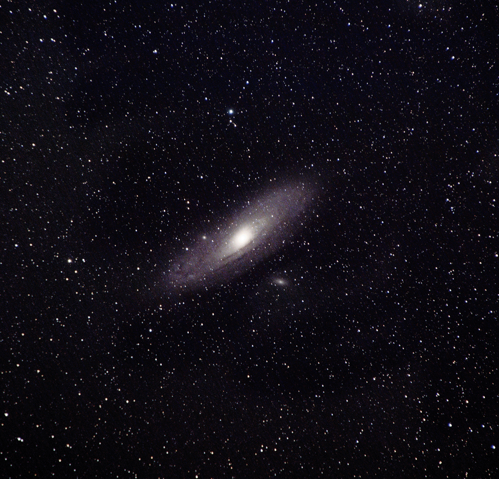
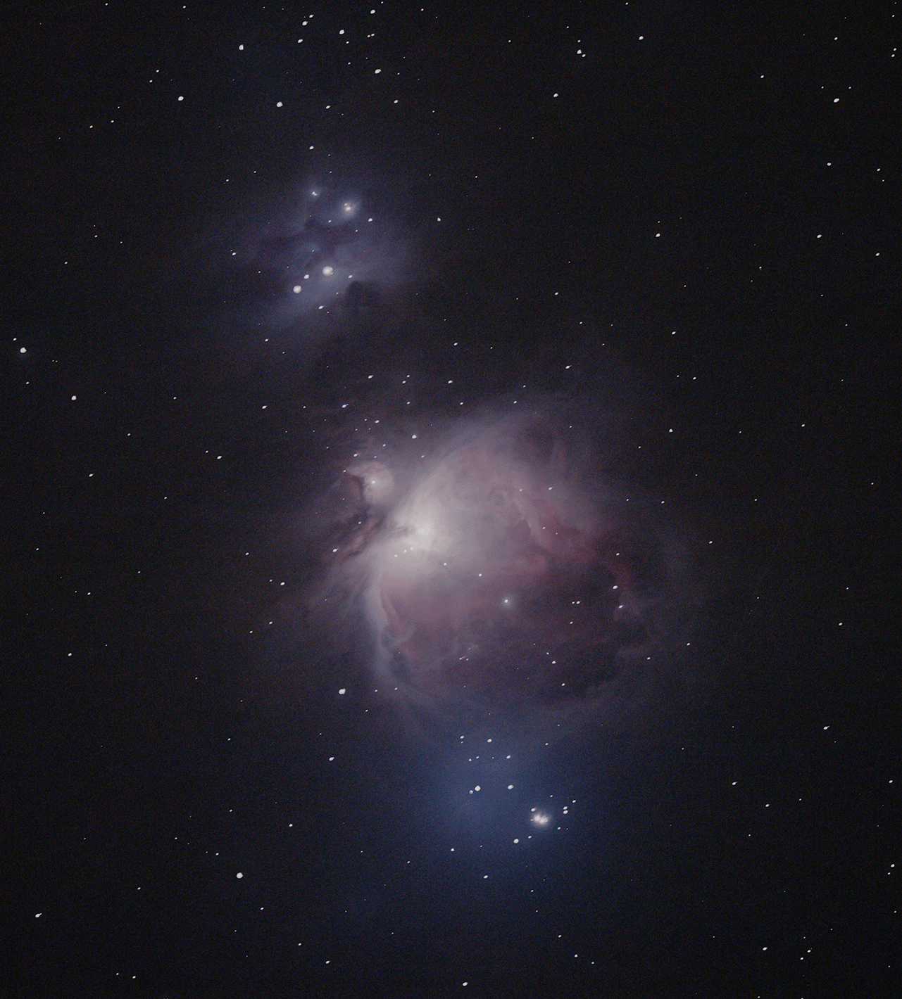
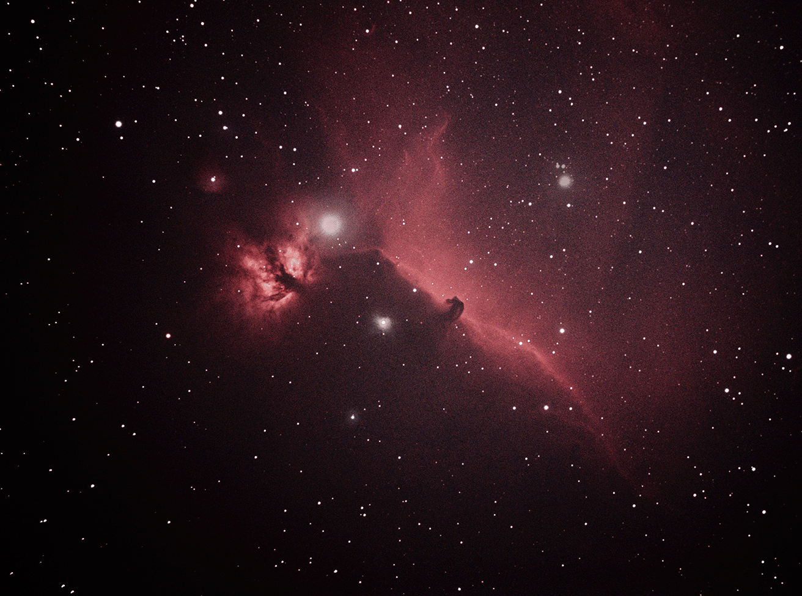
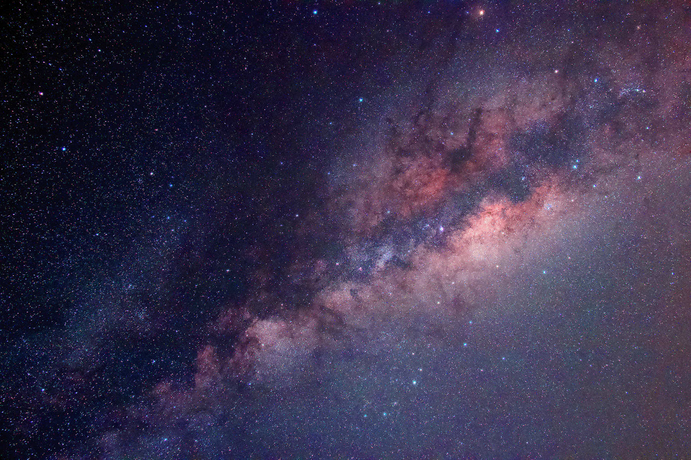
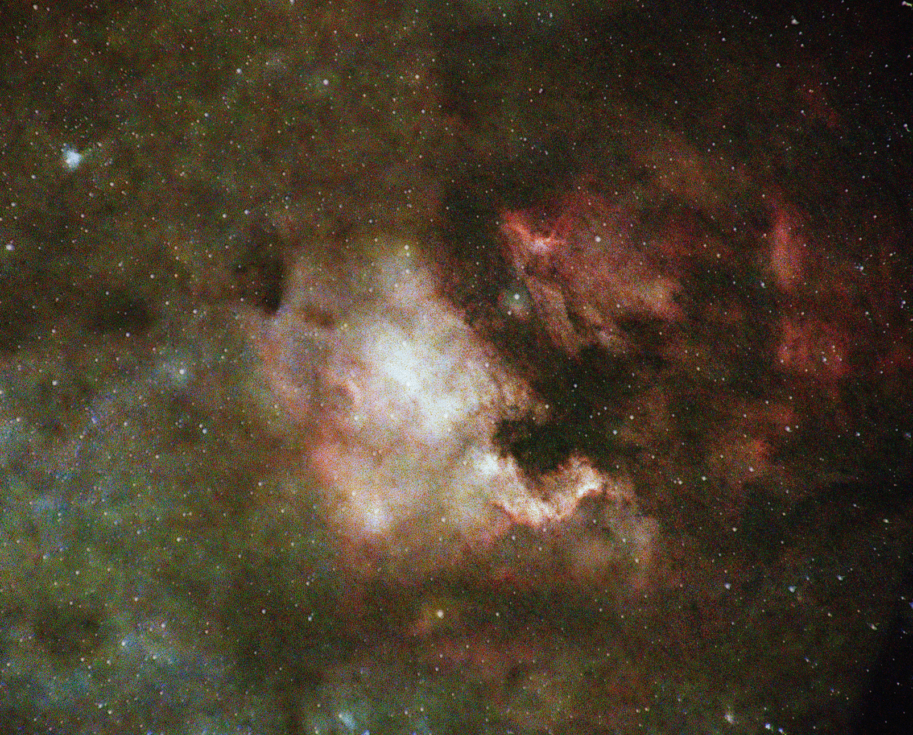
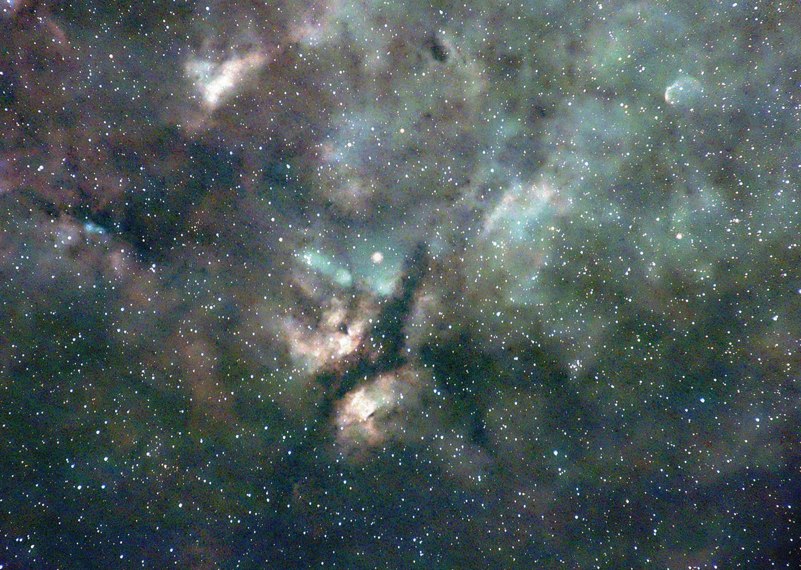
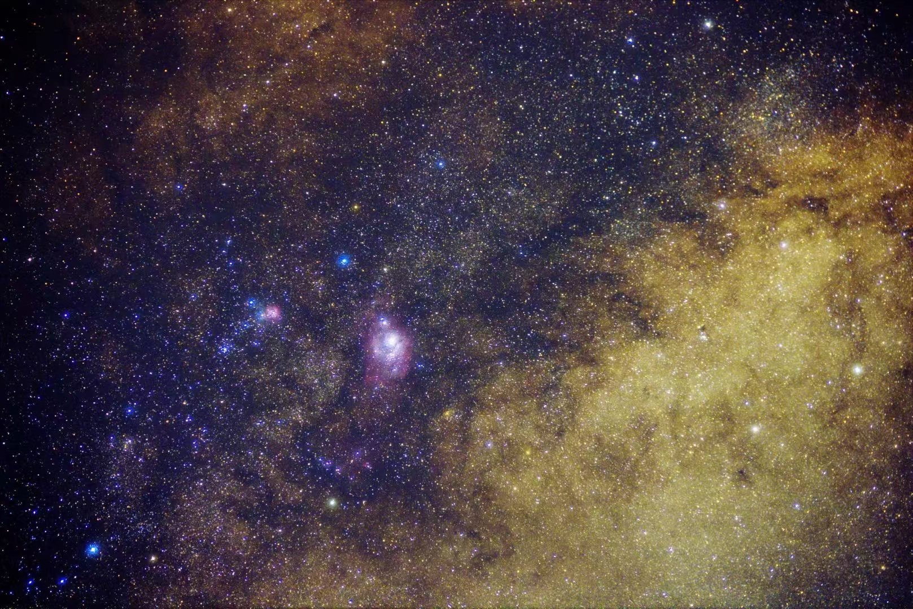

The Gallery
Discover the unknown
The universe is a vast and quiet place, full of objects most of us never pause to see — galaxies, star clusters, and glowing clouds of gas light-years across. Every photograph below was taken by me. Click any image to view it full-frame with its details, or open the full-resolution file.






